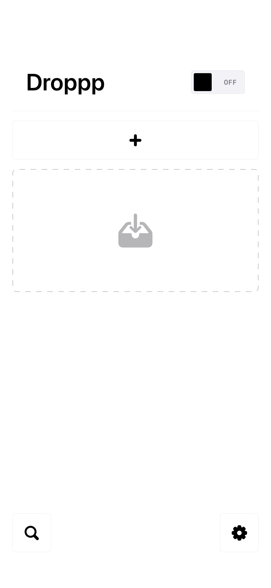
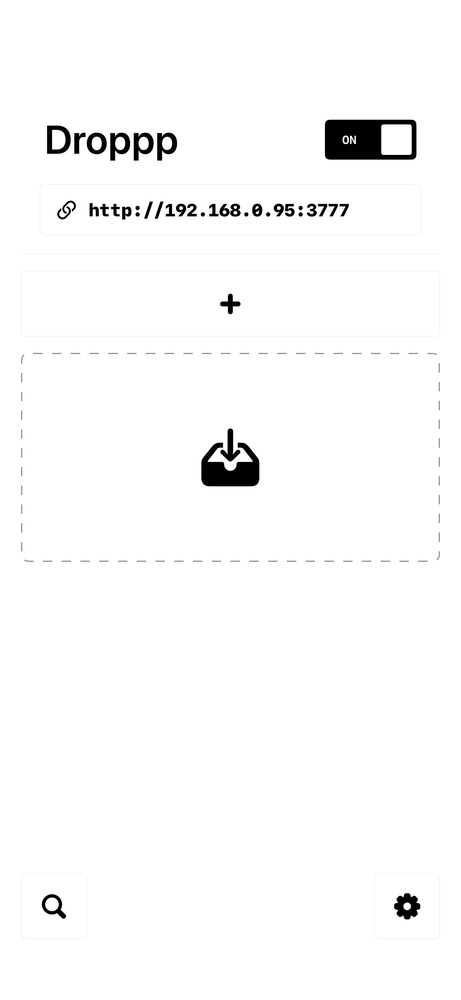

Same Wi-Fi
Connect your iPhone or iPad and the other device to the same Wi-Fi network.
DROPPP / THE GUIDE
Connect over Wi-Fi or Personal Hotspot. Open a browser, move your files, and keep them where you need them.
Screenshots show an earlier version. Button positions and menus may look different in the current app.
Once connected, open Droppp. Keep the app visible and the screen on throughout the transfer.
Turn on the switch beside Droppp. Wait for the connection address to appear. Droppp remembers your ON/OFF preference when you reopen the app; a supported network connection is still needed.


On the device connected to your Wi-Fi or hotspot, enter the full address shown in Droppp. A computer, phone, or tablet can connect without installing another app.
Tap the address to expand the controls beneath it. Copy the link, show a QR code, or change the server port. Tap the address again to collapse the controls.

Your address may use numbers or a name ending in .local. Always use the current address and port shown on your own device, not the one in a screenshot.
Browse your Droppp library, Files, or a connected folder from the web page.
Open the destination folder, then drop files onto the page or choose them with the upload button. On a phone or tablet, use the file picker.
Download individual files, select several, or download a folder. The browser saves the download on that device.
Use the browser’s TXT and URL controls to save a text file or a web link in the selected location.
If a transfer stops after you leave the app or lock the screen, return to Droppp, check that the server is ON, and reconnect using the displayed address.
Use + to import photos or files, create a folder, or write a TXT file. Create folders inside other folders and drag items into place. Search the current folder and filter by type, extension, or size.


You can also drag files into Droppp from other apps. Select saved files to share, delete, or move them into apps that support drag and drop.
Tap Files below the + button in Droppp. This dedicated folder is also available in Apple’s Files app.
In Files, open Browse → On My iPhone (or On My iPad) → Droppp → Files. Additions and deletions inside this folder appear in both apps.
Drag files from Droppp’s main list onto Files to copy them. To copy back, hold one or more files, close the Files page with X, and drop them into the main list.
The Files shortcut cannot be deleted inside Droppp. Its contents can be deleted. If the folder is removed in the Files app, Droppp recreates the folder when reopened; deleted files are not restored.
Tap + → Connect a folder, then choose a folder in the Files picker. It appears in your list with a small link indicator.
A connected folder points to its original location. Files added or deleted inside it are added or deleted there, too. Disconnecting the folder removes its link from Droppp and keeps the original folder.
Open the connected folder on Droppp’s web page to upload, browse, and download its files.
You can connect iCloud Drive folders. Files stored only in the cloud may need time and an internet connection to download before they open or transfer.
Open History from Settings to review recent file activity and transfer insights.
Review received, sent, and deleted items. Search by file name or source, then filter by activity, time, or file type.
Turn on Disable history below History in Settings. New activity is no longer recorded, and existing history is kept. Turn it off to resume recording.
Delete selected history entries when you no longer need them. Removing a record does not delete the file.

Open Settings with the gear button.
Follow your system appearance or choose Light or Dark. Select your preferred app language here, too.
Lower screen brightness automatically while the server is on. Keep Droppp in the foreground for transfers.
Turn on Hide import success message below Auto-dim screen to skip the import completion popup. It is off by default. Choosing Don’t show again in that popup enables the same setting.

Quick answers for your next transfer.
Check that both devices share the same Wi-Fi or that the other device is connected to your Personal Hotspot. Keep Droppp open with the server ON and allow its Local Network permission in iOS Settings. Enter the full current address, including http:// and the port. Some guest or public Wi-Fi networks prevent devices from connecting to each other.
No. The other device must be connected to your hotspot. The address shown in Droppp is a local address, not a public website.
Transferring files already stored on your device stays on the local connection. Downloading cloud-only files, syncing a connected cloud folder, or other internet activity may use mobile data.
After selecting files, tap the selected item count in the lower-left corner to select all files.
Tap the address to expand its controls, choose the port option, and enter a new port. Reconnect using the updated address.
Your Droppp library and its Files folder are stored on your device and are removed if you delete the app. Connected folders stay in their original location. A connected cloud folder can sync through its storage provider.
Droppp needs no account or cloud service for local transfers. Connecting an iCloud Drive folder is optional and uses your existing iCloud setup.
Check that it opens in the Files app and that its storage provider is available. For iCloud files, check your internet connection. If access has changed, reconnect the folder from the + menu.
Ready for your next drop?
Back to Droppp